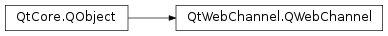

QWebChannel¶
Synopsis¶
Functions¶
- def
blockUpdates() - def
deregisterObject(object) - def
registerObject(id, object) - def
registerObjects(objects) - def
registeredObjects() - def
setBlockUpdates(block)
Slots¶
- def
connectTo(transport) - def
disconnectFrom(transport)
Signals¶
- def
blockUpdatesChanged(block)
Detailed Description¶
Exposes QObjects to remote HTML clients.
The
PySide2.QtWebChannel.QWebChannelfills the gap between C++ applications and HTML/JavaScript applications. By publishing aPySide2.QtCore.QObjectderived object to aPySide2.QtWebChannel.QWebChanneland using the qwebchannel.js on the HTML side, one can transparently access properties and public slots and methods of thePySide2.QtCore.QObject. No manual message passing and serialization of data is required, property updates and signal emission on the C++ side get automatically transmitted to the potentially remotely running HTML clients. On the client side, a JavaScript object will be created for any published C++PySide2.QtCore.QObject. It mirrors the C++ object’s API and thus is intuitively useable.The C++
PySide2.QtWebChannel.QWebChannelAPI makes it possible to talk to any HTML client, which could run on a local or even remote machine. The only limitation is that the HTML client supports the JavaScript features used byqwebchannel.js. As such, one can interact with basically any modern HTML browser or standalone JavaScript runtime, such as node.js.There also exists a declarative WebChannel API .
See also
Qt WebChannel Standalone Example JavaScript API
-
class
PySide2.QtWebChannel.QWebChannel([parent=Q_NULLPTR])¶ Parameters: parent – PySide2.QtCore.QObjectConstructs the
PySide2.QtWebChannel.QWebChannelobject with the givenparent.Note that a
PySide2.QtWebChannel.QWebChannelis only fully operational once you connect it to aPySide2.QtWebChannel.QWebChannelAbstractTransport. The HTML clients also need to be setup appropriately usingqwebchannel.js:ref:` <Qt-WebChannel-JavaScript-API>` .
-
PySide2.QtWebChannel.QWebChannel.blockUpdates()¶ Return type: PySide2.QtCore.bool
-
PySide2.QtWebChannel.QWebChannel.blockUpdatesChanged(block)¶ Parameters: block – PySide2.QtCore.bool
-
PySide2.QtWebChannel.QWebChannel.connectTo(transport)¶ Parameters: transport – PySide2.QtWebChannel.QWebChannelAbstractTransportConnects the
PySide2.QtWebChannel.QWebChannelto the giventransportobject.The transport object then handles the communication between the C++ application and a remote HTML client.
-
PySide2.QtWebChannel.QWebChannel.deregisterObject(object)¶ Parameters: object – PySide2.QtCore.QObjectDeregisters the given
objectfrom thePySide2.QtWebChannel.QWebChannel.Remote clients will receive a
destroyedsignal for the given object.
-
PySide2.QtWebChannel.QWebChannel.disconnectFrom(transport)¶ Parameters: transport – PySide2.QtWebChannel.QWebChannelAbstractTransportDisconnects the
PySide2.QtWebChannel.QWebChannelfrom thetransportobject.See also
-
PySide2.QtWebChannel.QWebChannel.registerObject(id, object)¶ Parameters: - id – unicode
- object –
PySide2.QtCore.QObject
Registers a single object to the
PySide2.QtWebChannel.QWebChannel.The properties, signals and public methods of the
objectare published to the remote clients. There, an object with the identifieridis then constructed.Note
A current limitation is that objects must be registered before any client is initialized.
-
PySide2.QtWebChannel.QWebChannel.registerObjects(objects)¶ Parameters: objects – Registers a group of objects to the
PySide2.QtWebChannel.QWebChannel.The properties, signals and public invokable methods of the objects are published to the remote clients. There, an object with the identifier used as key in the
objectsmap is then constructed.Note
A current limitation is that objects must be registered before any client is initialized.
-
PySide2.QtWebChannel.QWebChannel.registeredObjects()¶ Return type: Returns the map of registered objects that are published to remote clients.
-
PySide2.QtWebChannel.QWebChannel.setBlockUpdates(block)¶ Parameters: block – PySide2.QtCore.bool
© 2018 The Qt Company Ltd. Documentation contributions included herein are the copyrights of their respective owners. The documentation provided herein is licensed under the terms of the GNU Free Documentation License version 1.3 as published by the Free Software Foundation. Qt and respective logos are trademarks of The Qt Company Ltd. in Finland and/or other countries worldwide. All other trademarks are property of their respective owners.